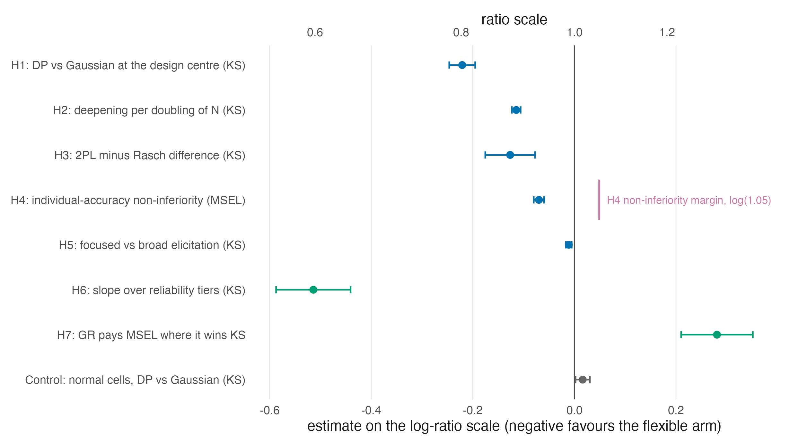
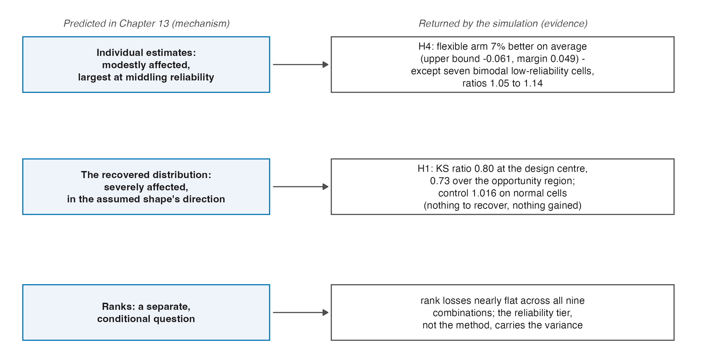

| Hypothesis | What it estimates | Estimate (log ratio) | 95% CI | Ratio scale | Holm \(p\) | Decision |
|---|---|---|---|---|---|---|
| H1 | Primary contrast at the design centre (KS) | -0.221 | [-0.246, -0.195] | 0.80 | 1.4e-28 | supported |
| H2 | Deepening per doubling of \(N\) (KS) | -0.114 | [-0.123, -0.106] | 0.89 | 1.2e-131 | supported |
| H3 | Rasch versus 2PL difference in differences (KS) | -0.127 | [-0.175, -0.078] | 0.88 | 0.0001 | supported |
| H4 | Non-inferiority on individual accuracy (MSEL) | -0.070 | [-0.080, -0.060] | 0.93 | 2.3e-23 | supported |
| H5 | Focused versus broad elicitation (KS) | -0.011 | [-0.017, -0.005] | 0.99 | 0.0001 | supported |
| Control | Calibration control on normal cells (KS) | 0.016 | [0.002, 0.030] | 1.02 | — | control (not a test) |
27 What the Simulation Settled
The chapters before this one were written to be true whether or not the companion simulation was ever run, and Parts I through VIII keep that discipline. This chapter is the deliberate exception announced in the front matter. The simulation has been run (7,200 fits over 120 conditions, under a preregistered plan with a sealed analysis path) and its realized results bear directly on claims this book stated as mechanisms and predictions (Lee 2026). Reading them back into the theory is due diligence, not contamination, provided three rules hold: every number is read from that volume’s frozen result store, confirmatory and exploratory findings are labelled as such, and nothing is re-derived or re-analysed here. Those rules are in force throughout this chapter, and the build enforces the first mechanically: the displays below are generated from the frozen store with the headline values asserted, so a divergence would fail the build rather than enter the text.
A reader who wants the full evidentiary record, from design and gates to diagnostics and sensitivity, should read the simulation volume itself. What belongs here is narrower: which of this book’s claims now carry evidence, which carry a quantified exception, and which were sharpened in ways the theory should absorb.
27.1 The design, in one paragraph
Two item-model families (Rasch, 2PL) crossed with three latent shapes (normal, skewed, sharply bimodal), five reliability tiers (targets .5 to .9, set by the calibrated bundle of Section 25.3), and four sample sizes (50 to 500) give 120 conditions; twenty replicate datasets per condition; each dataset fitted under a Gaussian prior and two DPM priors distinguished by their concentration elicitation (Section 15.6), with the three posterior summaries of Part VI (PM, CB, GR) extracted from every fit. Losses follow the goals of Chapter 17: squared error for individuals, a KS distance between the reported ensemble and the realized trait distribution, rank, quantile, and tail families alongside. Five primary hypotheses and a calibration control were preregistered, with two secondary hypotheses added by amendment before unblinding; all confirmatory contrasts run through one Holm family each at \(\alpha = .05\).
27.2 The confirmatory record

| Quantity | Estimate (log) | SE | 95% CI | Reading |
|---|---|---|---|---|
| H6: reliability-tier slope of the primary contrast (KS) | -0.514 | 0.037 | [-0.587, -0.441] | the DP advantage shrinks steeply as reliability falls |
| H6 diagnostic: the same slope on normal cells | -0.029 | 0.052 | [-0.131, 0.074] | covers zero: no tier trend where there is no shape to recover |
| H6 refit, bimodal cells only | -0.775 | 0.053 | — | the bimodal slope is about three times the skew slope |
| H6 refit, skewed cells only | -0.253 | 0.052 | — | see previous row |
| H7: MSEL-versus-KS trade-off of GR against PM | 0.281 | 0.031 | [0.210, 0.351] | GR pays on individual accuracy while usually winning on the distribution |
Read against Part V and Part VI, the record settles four things within the studied design, with confirmatory and exploratory strength stated separately.
The distribution prediction held, at interpretable magnitude. Section 13.4 predicted that a misspecified \(G\) damages the recovered distribution most. Realized: the flexible pipeline cuts KS loss to a ratio of .80 at the design centre (H1), deepening by a factor of .89 per doubling of \(N\) (H2), with a mean ratio of .73 over the preregistered opportunity region: about a quarter of the distribution-recovery loss removed where shape recovery is possible at all, and up to half of it in the most informative corner. The calibration control is the other half of the same finding: on normal cells the flexible arm wins nothing and costs 1.6 percent, which is what “there was nothing to recover” looks like when a design is honest about it.
The individual-score prediction held, with its exception quantified. The predicted modest effect on individuals resolved into H4’s non-inferiority verdict (the flexible pipeline is about seven percent better on average over the opportunity region, with the one-sided bound clearing the margin) against a named exception: seven bimodal cells at the two lowest reliability tiers, all with intervals excluding parity, where flexibility costs five to fourteen percent on individual squared error. Table 27.3 lists them. The pooled H4 verdict is confirmatory; the seven-cell localization is the source volume’s post-outcome Addendum 006 disclosure, not a second confirmatory contrast. This is Chapter 13’s “largest at middling reliability” clause made precise, and it is the region the case-study volume treats as recommendation-free (Chapter 28).
| Condition | MSEL ratio | 95% CI | Label |
|---|---|---|---|
| 2PL, \(N = 500\), \(\bar\rho = 0.5\), bimodal | 1.138 | [1.115, 1.162] | block |
| 2PL, \(N = 200\), \(\bar\rho = 0.5\), bimodal | 1.122 | [1.095, 1.149] | block |
| Rasch, \(N = 200\), \(\bar\rho = 0.5\), bimodal | 1.094 | [1.048, 1.136] | caution |
| 2PL, \(N = 200\), \(\bar\rho = 0.6\), bimodal | 1.092 | [1.070, 1.116] | caution |
| Rasch, \(N = 500\), \(\bar\rho = 0.5\), bimodal | 1.076 | [1.059, 1.093] | caution |
| 2PL, \(N = 500\), \(\bar\rho = 0.6\), bimodal | 1.072 | [1.059, 1.084] | caution |
| Rasch, \(N = 200\), \(\bar\rho = 0.6\), bimodal | 1.052 | [1.030, 1.077] | caution |
Reliability gates the whole mechanism. H6 puts a slope on what Chapter 11 and Chapter 13 argued qualitatively: the flexible arm’s advantage shrinks steeply as the reliability tier falls, and the same regression run on normal cells is flat: no shape, no gating. The exploratory split adds a detail the theory did not predict: the gate is about three times steeper for bimodal shapes than for skewed ones. The asymmetry has a mechanism worth recording. Recovering two modes requires resolving individuals between them, while recovering skew requires only getting a tail’s mass right, and the resolution demand is the reliability-hungry one. But the split sits outside the preregistered family, and this book cites it as the source volume labels it. The caveat of Section 25.3 travels with every H6 sentence: “reliability” here names the design bundle, not a lever separated from test length.
The three-goals incompatibility is realized, not just possible. Theorem 17.1 established existence: the three Bayes actions need not be compatible in one estimate set. H7 measures the live version on the primary diagonal of that triangle: the summary that wins distribution recovery pays on individual accuracy, an average penalty of 0.281 log units, equivalent to 32.4 percent on the ratio scale. At the condition-mean point-estimate level, 239 of the 240 condition-by-prior points fall in the predicted quadrant. The one exception is a near-parity KS result under the Gaussian prior in the 2PL, \(N=500\), target-reliability .9, sharply bimodal condition: the KS gap \(\log(L_{\mathrm{PM}}/L_{\mathrm{GR}})\) is \(-0.004\), while the MSEL gap is \(-0.155\). The theorem said the goals can conflict; the pooled H7 result and 239-point census say they usually do in the predicted direction, without turning one boundary-near exception into a universal.
| Point-estimate census | Near-parity exception | Prior | KS gap, log(PM / GR) | MSEL gap, log(PM / GR) |
|---|---|---|---|---|
| 239 of 240 in the predicted quadrant | 2PL, N = 500, target reliability = .9, sharply bimodal | Gaussian | -0.004 | -0.155 |
27.3 The two levers, ordered
Part VI treats the prior on \(G\) and the posterior summary as two levers on the reported ensemble. The simulation’s exploratory decompositions order them, and the ordering is the single most practice-relevant exploratory pattern in the record.
| Loss family | Summary-swap range factor (geometric mean) | Prior-swap range factor (geometric mean) | Share of spread: summary | Share of spread: prior |
|---|---|---|---|---|
| KS (distribution) | 1.52 | 1.13 | 82% | 14% |
| squared error (individual) | 1.18 | 1.07 | 79% | 18% |
| rank family | 1.00 | 1.01 | 5% | 86% |
| quantile | 2.01 | 1.26 | 77% | 14% |
| tail | 2.24 | 1.45 | 68% | 17% |
| Comparison | Mean KS ratio | Cells won |
|---|---|---|
| Gaussian + GR against DP(focused) + PM, all 120 cells | 0.747 | 100 of 120 |
| Gaussian + GR against DP(focused) + PM, non-normal cells | 0.849 | 60 of 80 |
| Summary swap alone (Gaussian + GR against Gaussian + PM), non-normal | 0.746 | 79 of 80 |
| Prior swap alone (DP(focused) + PM against Gaussian + PM), non-normal | 0.879 | 73 of 80 |
| Both levers (DP(focused) + GR against Gaussian + PM), non-normal | 0.593 | 80 of 80 |
In this exploratory decomposition, on distributional losses the summary is the larger lever, with swap factors near 1.5 against 1.1 and roughly eighty percent of the nine-combination spread against fourteen, and the crossed competition makes the ordering vivid: a Gaussian prior read through GR beats a focused DP prior read through PM in 100 of the 120 cells. Both levers together are superadditive over the non-normal cells: the summary swap alone removes about a quarter of KS loss, the prior swap alone about an eighth, the pair together about forty percent. For this book the implication runs straight back to Part VI’s architecture: the posterior summary is not a reporting detail appended to a model choice — on these losses it is the primary decision, and the prior is the refinement. The same exploratory record also locates where the levers are near-inert: on rank losses the combinations are practically indistinguishable, with the reliability tier carrying nearly all the variance (Chapter 20’s precision reading, returned as data), and the descriptive evidence census records the primary contrast’s flags. Of 57 flagged cells, 49 intervals cross parity, two touch parity from below, three lie strictly below parity without meeting the win rule, and three lie strictly above parity and record a real cost, all on normal shapes.
| Category | Cells |
|---|---|
| Strong win | 45 |
| Win | 17 |
| Tie | 1 |
| Flag: interval crosses 1 | 49 |
| Flag: interval touches 1 from below | 2 |
| Flag: interval lies strictly below 1 | 3 |
| Flag: interval lies strictly above 1 (all normal-shape) | 3 |
| Opportunity-region mean ratio | 0.73 over 40 cells |
27.4 Predictions against returns

Figure 27.2 closes the loop that Section 13.4 opened. Over the visited grid, registered contrasts support the distribution and individual predictions within their stated domains. The distribution prediction also holds in mechanism (largest effects exactly where reliability and sample size make shape recoverable); the individual prediction carries the qualified exception region above. The exploratory loss-family census, not a registered rank hypothesis, places the rank prediction near flatness. The Paddock et al. pattern this book flagged as its strong prior — sensitivity concentrated in distributional functionals, robustness in ranks, the whole effect reliability-dependent (Paddock et al. 2006) — transfers to the binary-response setting largely intact, which Chapter 13’s callout predicted but could not assert. What the theory did not anticipate, the record adds: the bimodal-versus-skew asymmetry in the gate, the exact location of the exception region, and the size of the summary lever relative to the prior lever. Those three now belong to the theory’s working picture, at exploratory strength for the first and third, and confirmatory strength for the pooled individual-accuracy result underlying the second; its seven-cell localization remains the post-outcome disclosure described above. The map is a synthesis of registered results and exploratory censuses, not itself a new confirmatory test.
27.5 Sources and provenance
Every number in this chapter is read at build time from the simulation volume’s frozen fact store (data/derived/book-facts.rds of that repository) or from tables derived from it by code/R/20-evidence-tables.R, with the headline values asserted against the volume’s published record before any display is written; the volume itself is Lee (2026), and its external review’s independent reproduction of the confirmatory record is part of why this book is willing to quote it. Confirmatory results quoted: H1 through H5, the calibration control, H6, H7. Exploratory results quoted and labelled: the H6 shape split, the lever decomposition, the crossed competition, the winner and evidence censuses. The design summary restates that volume’s frozen design tables; the H7 point census is a deterministic recount of its frozen condition means, not a new fitted analysis; the ladder caveat is Section 25.3’s. Paddock et al. (2006) is cited as in Chapter 13, at the passages read there. No result of this book’s own is derived from the simulation’s data, and no simulation analysis is re-run here.
Lee, JoonHo. 2026. A Simulation Study of Dirichlet Process Mixture Priors and Goal-Specific Posterior Summaries in Bayesian IRT. Quarto book, The University of Alabama.
Paddock, Susan M., Greg Ridgeway, Rongheng Lin, and Thomas A. Louis. 2006. “Flexible Distributions for Triple-Goal Estimates in Two-Stage Hierarchical Models.” Computational Statistics & Data Analysis 50 (11): 3243–62. https://doi.org/10.1016/j.csda.2005.05.008.